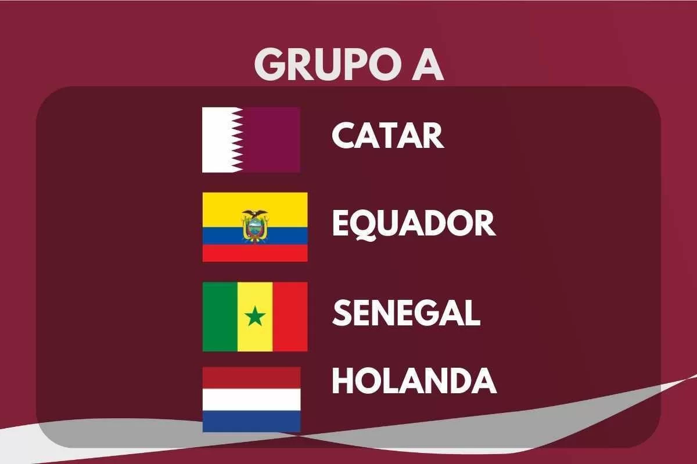

DESCRIÇÃO DO GRUPO
O Grupo A da Copa do Mundo FIFA 2022 tera sua primeira fase de jogos de 21 a 29 de novembro de 2022.
O grupo é formado por Qatar (Seleção Anfitriã), Equador, Senegal e Países Baixos.
As duas melhores equipes avançam para as oitavas de final.
|  |
Encontros anteriores em Copas do Mundo |
| Catar x Equador |
Nenhum encontro |
| Senegal x Holanda |
Nenhum encontro |
| Catar x Senegal |
Nenhum encontro |
| Países Baixos x Equador |
Nenhum encontro |
| Países Baixos x Catar |
Nenhum encontro |
| Equador x Senegal |
Nenhum encontro |
EQUIPES
| Equipe |
Inscrição |
Confederação |
Método de Qualificação |
Data de Qualificação |
Aparições em Copas do Mundo |
Última Participação |
Melhor Resultado |
Ranking FIFA (Março/2022) |
| Catar |
A1
(Cabeça-de-chave) |
AFC |
País-sede |
02 de Outubro de 2010 |
1 |
Estreante |
- |
51º |
| Equador |
A2 |
CONMEBOL |
4º colocado da fase única |
24 de Março de 2022 |
4 |
2014 |
Oitavas de final (2006) |
46º |
| Senegal |
A3 |
CAF |
Vencedor do grupo A |
29 de Março de 2022 |
3 |
2018 |
Quartas de final (2002) |
20º |
| Países Baixos |
A4 |
UEFA |
Vencedor do grupo G |
16 de Novembro de 2021 |
11 |
2014 |
Vice-campeão (1974, 1978, 2010) |
10º |
PARTIDAS
Todas as partidas seguem o fuso horário UTC+3 (Horário de Moscow).
Este será o primeiro torneio desde 1954 onde a partida de abertura não envolve nem os anfitriões nem os atuais campeões,
a fim de maximizar a audiência sul-americana para o jogo Catar x Equador.
Senegal x Países Baixos
| Data/Hora |
Local |
| 21 de Novembro às 13:00 |
Estádio Al Thumama, Doha |
Catar x Equador
| Data/Hora |
Local |
| 21 de Novembro às 19:00 |
Estádio Al Bayt, Al Khor |
Catar x Senegal
| Data/Hora |
Local |
| 25 de Novembro às 16:00 |
Estádio Al Thumama, Doha |
Países Baixos x Equador
| Data/Hora |
Local |
| 25 de Novembro às 19:00 |
Estádio Internacional Khalifa, Al Rayyan |
Equador x Senegal
| Data/Hora |
Local |
| 29 de Novembro às 18:00 |
Estádio Internacional Khalifa, Al Rayyan |
Países Baixos x Catar
| Data/Hora |
Local |
| 29 de Novembro às 18:00 |
Estádio Al Bayt, Al Khor |
CLASSIFICAÇÃO
| 1º Colocado |
2º Colocado |
| Enfrenta o 2º Colocado do Grupo B, nas Oitavas de Final |
Enfrenta o 1º Colocado do Grupo B, nas Oitavas de Final |